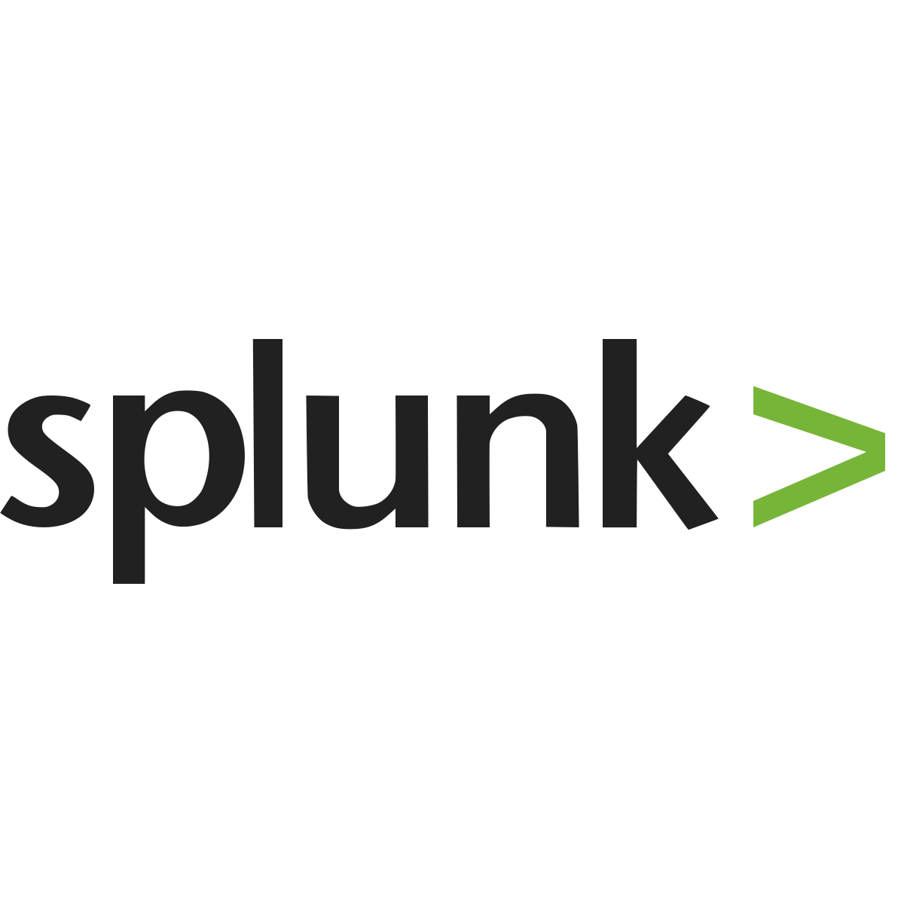
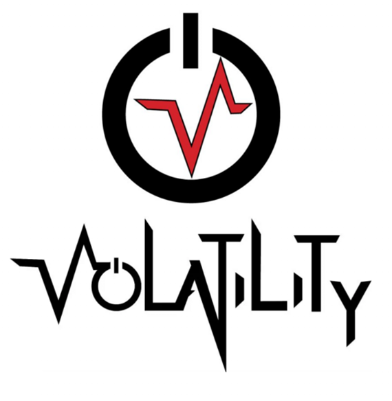
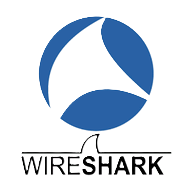
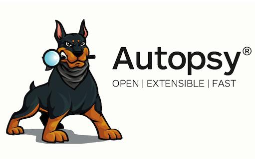
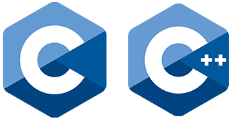
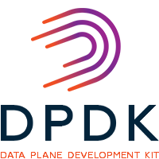
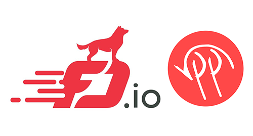
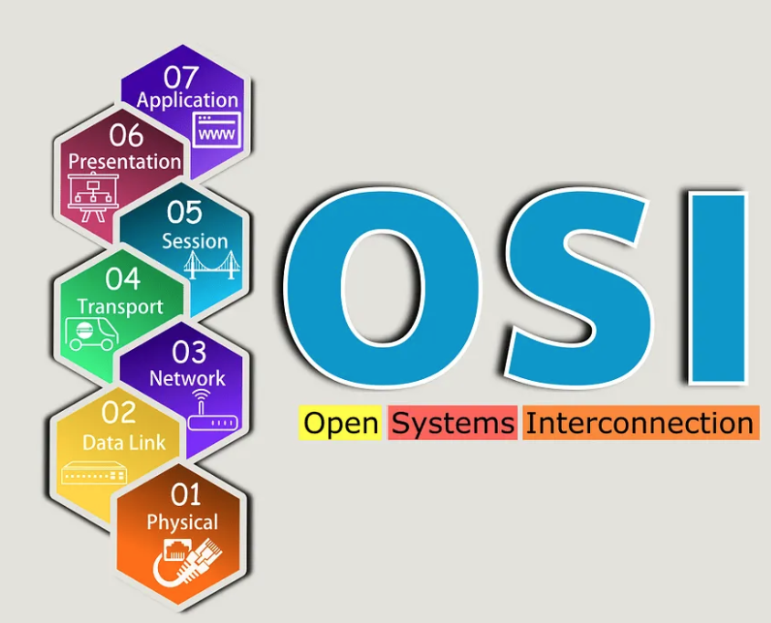
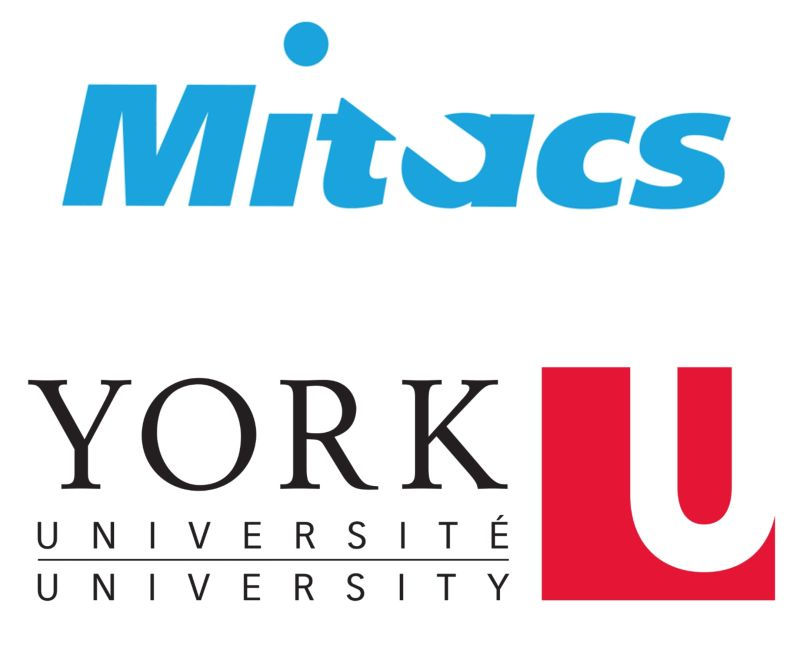
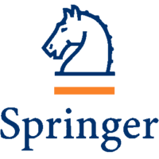

Abhay Pratap Singh
I am a
About Me
I am a Scientist 'B' at the Centre for Development of Telematics (C-DOT, DoT, GoI), where I design and engineer national-scale, ultra-low-latency network systems. I hold a B.Tech. in Computer Science from IIT Jodhpur (Institute Silver Medal) and was ranked All India 1st in Microsoft CyberEngage 2022.
My core expertise lies in low-latency / HFT-grade systems: DPDK kernel-bypass packet processing at 400 Gbps line-rate, lock-free data structures, AVX-512 SIMD optimization, CPU core isolation, NUMA-aware allocation, and NIC hardware offloads — the same techniques underpinning co-location-grade market-data and order-execution pipelines. I also architect production LLM inference stacks (vLLM + A100), autonomous CI/CD agents, and RAG pipelines for developer productivity.
Beyond systems software, I have hands-on research experience in AI-driven malware detection (published in The Journal of Supercomputing, Springer) and cybersecurity, having conducted MITACS research at York University, Toronto.

Experience
Scientist 'B' (Systems Software Engineer & Architect)
Centre for Development of Telematics (DoT, GoI)
- Designed a DPDK-VPP kernel-bypass packet processing engine in C, sustaining 400 Gbps line-rate Rx/Tx on a single commodity server — directly analogous to co-location-grade market-data feed ingestion and order-execution pipelines.
- Eliminated kernel scheduling overhead via DPDK Poll Mode Drivers (PMD) with busy-poll I/O loops, achieving deterministic sub-microsecond packet forwarding latency — the same execution model as HFT tick-to-trade fast paths.
- Engineered lock-free, wait-free ring buffers (rte_ring) and hugepage-backed memory pools (rte_mempool), achieving zero malloc contention under sustained 400 Gbps load — identical to the zero-alloc constraint in HFT order management hot paths.
- Designed cache-line-aligned (64-byte) struct layouts using __rte_cache_aligned, eliminating false sharing between forwarding cores — reducing L1 D-cache miss rate by ~40% and delivering predictable, jitter-free throughput.
- Implemented CPU affinity pinning (pthread_setaffinity_np) and NUMA-local hugepage allocation, isolating forwarding threads to dedicated physical cores — directly applicable to HFT thread-isolation and latency-determinism requirements.
- Applied AVX-512 SIMD intrinsics (_mm512_*) for bulk packet classification and field extraction, achieving a 10× throughput uplift and 15× reduction in CPU utilization.
- Engineered NIC hardware offloads (RSS, checksum offload, segmentation, flow classification) to offload compute from software, reducing per-packet CPU cycles.
- Implemented C-based Deep Packet Inspection (DPI) for eSNI extraction from UDP/TLS flows by parsing Initial ClientHello and TLS extensions via nDPI — demonstrating byte-level protocol parsing at wire speed.
- Engineered a two-phase Producer-Consumer stateful DPI pipeline maintaining per-flow state across correlated packets, expanding protocol coverage by 200%; PoC accepted by an Inter-ministerial committee (GoI).
- Architected a production-grade, fully air-gapped LLM inference stack on Dell PowerEdge R760 (NVIDIA A100 80GB PCIe) using vLLM 0.21 + Qwen3.6-27B-FP8, achieving ~60 tok/s with zero data egress.
- Implemented RadixAttention KV-cache prefix caching (43GB cache pool, ~675K token capacity), enabling sub-50ms repeated-query latency for real-time IDE assistance.
- Built a hybrid RAG pipeline using Qdrant vector DB with BAAI/bge-large-en-v1.5 dense embeddings, ingesting DPDK API references and Intel AVX-512 manuals via automated nightly cron jobs.
- Designed a LangGraph-based autonomous CI/CD verification pipeline: Clang/Tree-Sitter AST analysis, gcc compilation loop with self-correction, and DPDK standards compliance scanning — cutting code review turnaround from hours to minutes.
- Deployed DNS Response Policy Zone (RPZ) across enterprise DNS infrastructure in Delhi & Bangalore, blocking thousands of blacklisted domains and C&C servers in real time.
- Engineered high-throughput distributed async crawlers using Python asyncio and Playwright across Telegram/Reddit nodes, achieving 70% higher throughput over the previous solution.

MITACS Research Intern (AI/ML & Cybersecurity)
York University, Toronto, Canada
- Implemented a multi-layer ML ensemble (information-gain feature selection, three-layer Random Forest, weighted score fusion) over network flow and memory dump features; achieved macro F1 ≈ 0.98 on a 17TB production-scale benchmark.
- Engineered an automated Python + QEMU VM orchestration testbed executing 2,000 malware samples across 8 families (8 vCPU / 8GB RAM per VM, parallelized) — directly analogous to large-scale backtesting infrastructure in HFT research.
- Achieved L1 macro P/R/F1 ≈ 0.96/0.96/0.95; L2 macro F1 ≈ 0.98; results published in The Journal of Supercomputing (Springer).
- Designed VolMemLyzer-V2 in Python with 250+ memory analytics features (vs <75 in V1) using the Volatility3 framework; modular pipeline reduced snapshot processing time by 20–30%.
Security Consultant (Cybersecurity Intern)
WhizHack Technologies
- Contributed to the next-gen SIEM (TRACE) implementing RFC 5424/5425 syslog ingestion standards for high-volume event streams — directly analogous to real-time market event stream processing and alerting.
- Designed and deployed 3 containerized CONPOT honeypots in Docker for OT security research, demonstrating production container orchestration for isolated, adversarial environments.
Mentee (Cybersecurity Intern)
Microsoft Cybersecurity Engage 2022
- Ranked 1st All India on the program leaderboard defending Critical Infrastructure (Delhi SLDC) from Stuxnet-like cyber-attacks — demonstrating elite competitive performance under adversarial, time-pressured conditions.
- Conducted OSINT and proposed a 15-control Zero Trust defence architecture with incident response playbooks; presented 5 functional ML and security PoCs.
- Identified 10 most probable attack vectors against Critical Infrastructure and developed a comprehensive Solution Architecture including an ML model to detect botnet attacks.
Technical Skills
Programming / Systems
Low-Latency / HFT Systems
Network Protocols
AI / LLM Infrastructure
Cybersecurity Tools
CI/CD & Infrastructure
Certifications

Featured Projects
Publications
Unveiling Evasive Malware Behavior: Towards Generating a Multi-Sources Benchmark Dataset and Evasive Malware Behavior Profiling Using Network Traffic and Memory Analysis
Published in The Journal of Supercomputing (Springer).
Read Paper
Achievements & Recognition
- All India Rank 1, Microsoft Cybersecurity Engage 2022 — top competitive performance across all India participants in adversarial Critical Infrastructure (Delhi SLDC) defence scenarios.
- Institute Silver Medal, IIT Jodhpur — awarded for outstanding contributions to the Student Senate and overall excellence across the B.Tech. programme (AY 2022–23); also received Student Distinguished Services Award.
- Contingent Leader of 150 IIT Jodhpur students in the 55th Inter-IIT Sports Meet 2022; personally led the Runner-Up Best Marching Contingent at IIT Delhi.
- Vice-President, Board of Student Sports — headed investments & events worth ₹2.1 Cr (INR) with 95% budget utilization; grew from 9 to 15 societies, tripling student engagement.
- 4th place (of 23 IITs) leading a 4-member team in Inter-IIT Tech Meet 12.0 Cybersecurity challenge at IIT Madras.
- State Rank 3 (Uttarakhand), NSTSE-2019 — National Science Talent Search Examination, Unified Council.
- Highest KRA points of all <3 YoE team members in the National Scale Packet Processing Solution team at C-DOT.